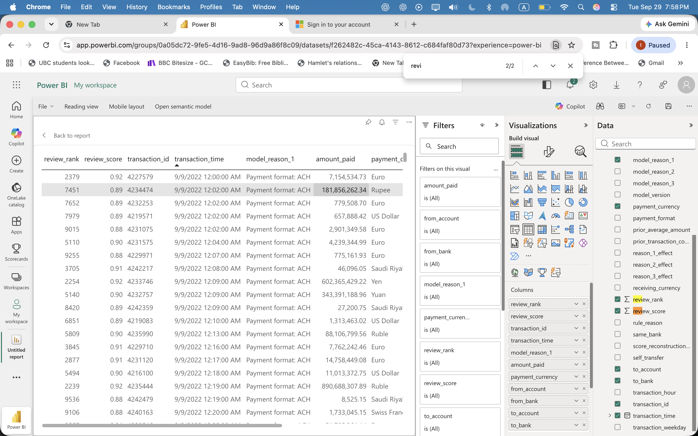
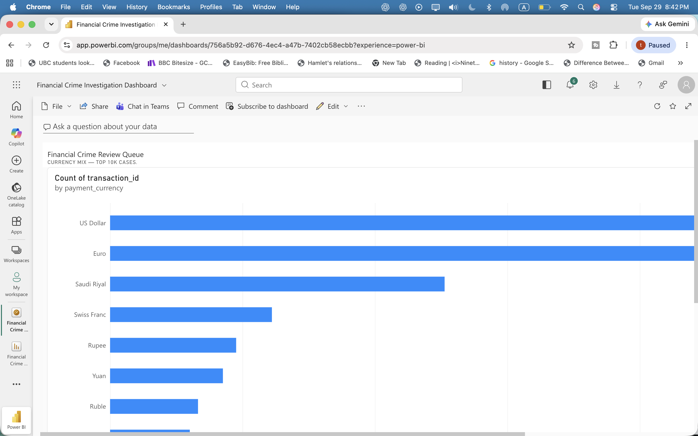

Project report · Financial analytics
Financial Crime
Analytics
Turning a long list of payments into an explainable review queue.
Technologies PostgreSQL · SQL · Python · NumPy · Power BI
Project overview
I built a transaction-ranking system using 5,078,345 simulated payments from IBM’s HI-Small dataset. The objective was to help a reviewer decide which payments to inspect first, with an explanation for each suggestion.
The project combines SQL analysis, a class-weighted logistic regression model built with NumPy, and a Power BI review report. The model ranks payments for human review; it does not confirm money laundering or make investigation decisions.
How I built it
- Understand the payments. Use SQL to examine payment amounts, formats, currencies, and account activity, then build features from the payment and its sender’s earlier history.
- Learn from earlier dates. Train the model on payments before September 8, 2022, validate on September 8, and test on September 9 onward.
- Explain the review order. Export the top 10,000 test payments with their scores and feature-contribution explanations to a saved Power BI report. A separate local browser dashboard supports filters and explanations.
Modelling decisions
The chronological split tests the model on later payments instead of randomly mixing dates. Historical features use earlier calendar days, and laundering labels are excluded from model inputs; labels are used as training targets and evaluation answers.
Class weighting gives rare labelled payments more influence during training. I evaluate the ranking at fixed review capacities because a team can only inspect a limited number of cases. Explanations show feature contributions to the model score, not causes of wrongdoing. The score is not a calibrated probability of crime.
Results
The test period contains 863,900 payments, including 1,611 labelled positives. Of the first 1,000 suggestions, 199 matched the dataset’s laundering labels and 801 did not. This is 19.9% precision and 12.35% recall: most flagged payments were not labelled positives, and most labelled positives remained outside that shortlist.
| Reviewed | Labels found | Precision | Recall |
|---|---|---|---|
| 100 | 35 | 35.0% | 2.17% |
| 500 | 103 | 20.6% | 6.39% |
| 1,000 | 199 | 19.9% | 12.35% |
| 5,000 | 592 | 11.84% | 36.75% |
PR-AUC was 0.1016 and ROC-AUC was 0.9330. A score cutoff of 0.5 produced 116,179 false positives, which is why review-capacity results are more useful here than treating the score as a yes/no alert.


Figure 1. Ranked review queue
Higher scores mean earlier review. Read the payment details and explanation alongside each score. Select the figure to enlarge it.
Supporting evidence: currency dashboard and evaluation details


Figure 2. Cases by currency
Distribution of the ranked review sample across currencies. Case counts are not monetary totals or confirmed crimes.
The test positive-label rate is 0.1865%. Precision at 1,000 is about 107 times that base rate within this synthetic time split. This measures enrichment in the sample, not business impact or performance at a real bank. Full split counts and evaluation metrics are in the model report.
Data & limitations
The dataset covers 18 simulated days, 15 currencies, and 7 payment formats. Later dates contain a higher share of labelled positives, limiting how broadly the test results can be interpreted. There is no external validation, probability calibration, or real investigator feedback.
Currency and payment-format associations may reflect the simulator. The analysis import uses NUMERIC(18,2), which can round source values with greater precision, including Bitcoin; source precision needs auditing before asset-level financial analysis. Amount comparisons must respect currency boundaries.
The Power BI screenshots show a saved report in a private workspace, not a live monitoring service. All payments and labels are synthetic. Neither high scores nor feature explanations establish that a crime occurred.
Technical evidence: model evaluation · SQL findings · Power BI handoff